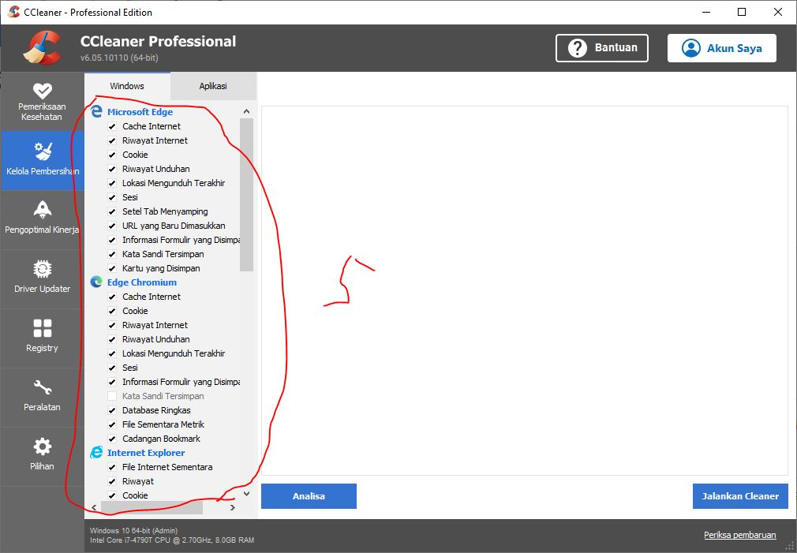
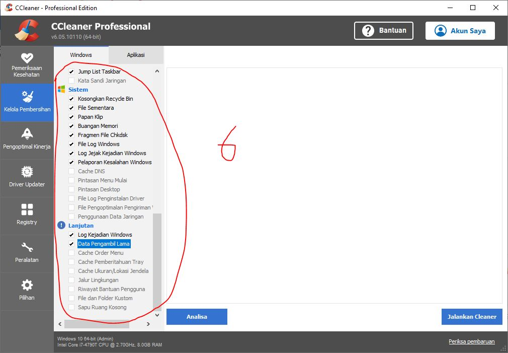
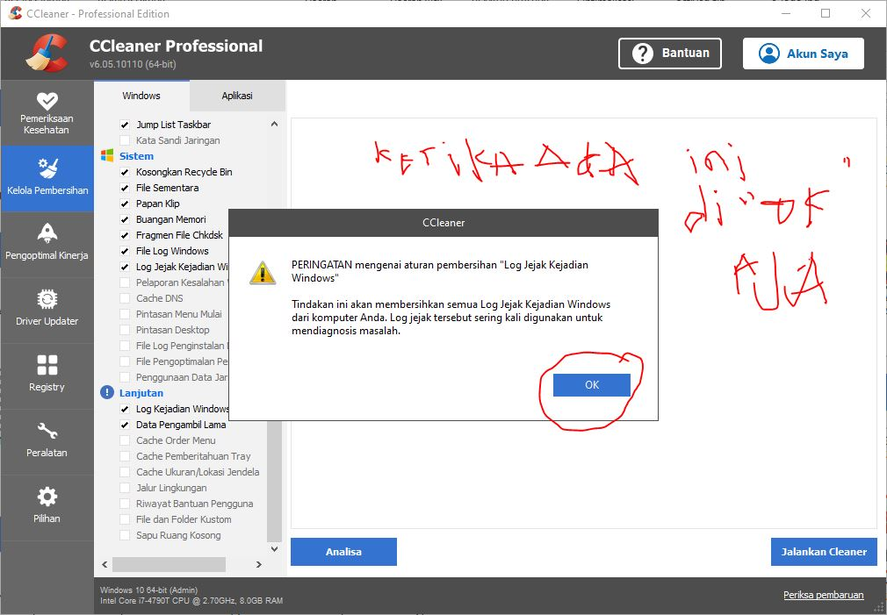
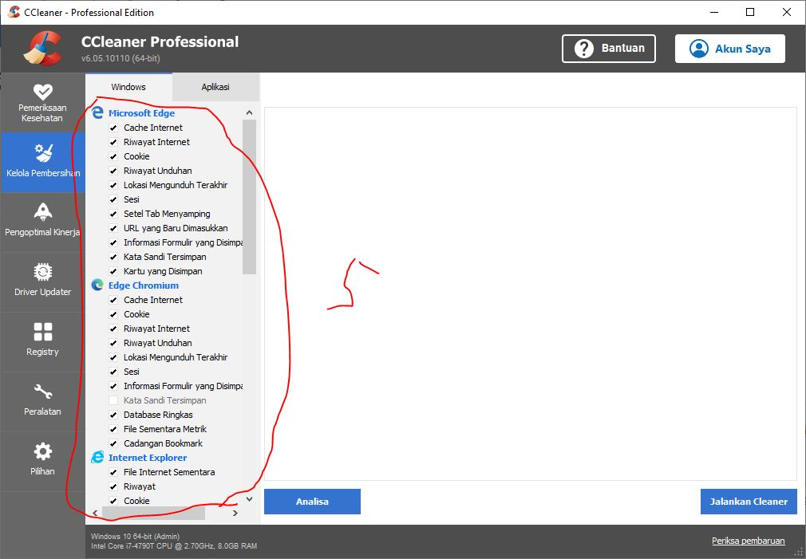
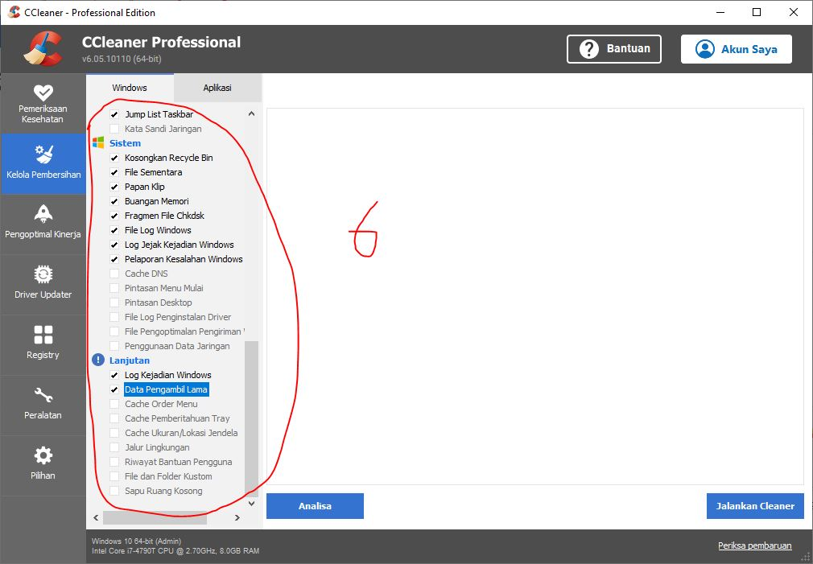
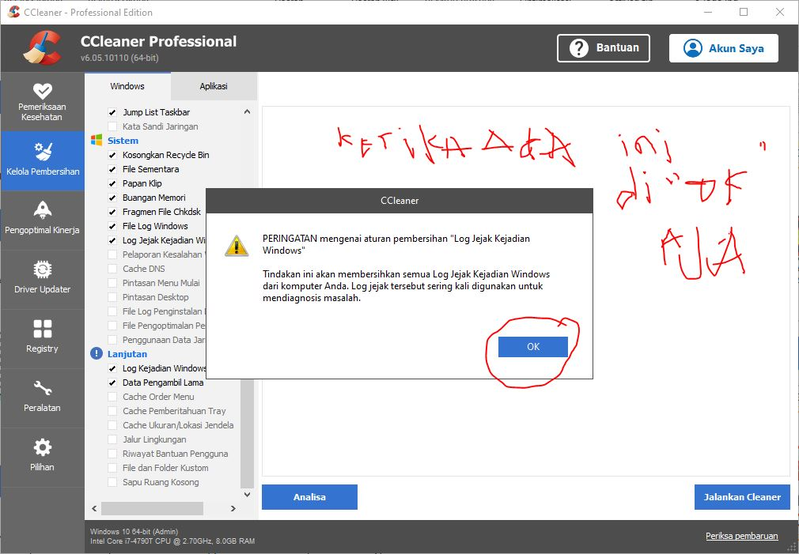

Cara Meningkatkan Kinerja PC/Laptop Cara Memperbaiki Laptop ngehang dan Lemot
DISCLAIMER:
Segala tuntutan hukum dan/atau kerusakan hardware PC Anda menjadi tanggungjawab pribadi masing-masing.
Saya menganjurkan untuk membeli lisensi resmi di website CCleaner.
saya hanya berniat untuk berbagi pengalaman saja.
Persiapan
backup dulu akun google crome jika lupa password bisa ganti padword terlebih dahulu. Jika tidak dimasukan akun chrome juga tidak masalah.
Kenapan ini perlu di lakukan?? Karena nanti secara otomatis akun chrome akan logout jadi jika buka email pasti disuruh masukin akun gmail.
Cara mengoptimalkan Kinerja Komputer dengan CCleaner
Download Winrar terbaru silahkan cari di google, kemudian install
Download Aplikasi CCleaner yang full version bisa di download di website www.r3ndy.com
install aplikasi CCleaner sampai selesai, kemudian buka menu Option >> Setting >> Language Pilih Bahasa Indonesia
Layar Beranda CCleaner pilih Pembersihan Kustom
Menu Jadwal Pembersihan Pilih Pembersihan Otomatis, Klik menu Preferensi pilih Pembersihan kustom pilih setiap pekan
menu kelola pembersihan untuk internet Explorer bisa diceklis semua.
untuk system cek list di bagian log jejak kejadian windows, pelaporan kesalahan windows, file log penginstalan driver.
pada baian Lanjutan, ceklist log kejadian windows dan data pengambil lama kenapa hal ini point 7 dan 8 perlu dilakukan ?? karena setiap PC di hidupkan software pc akan membuat file log system ukurannya sekitar 100 MB, nah jika tiap hari di pakai dengan jarak 1 tahun, bayangin tuh 100 MB x 365 hari = 36.500 MB atau 36,5 GB.. ini yang menyebabkan PC lemot/lelet jadi sebaiknya dibersihkan tiap minggu.
 




